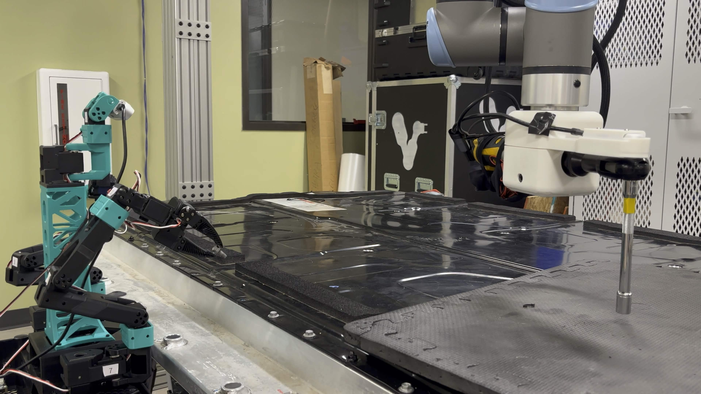
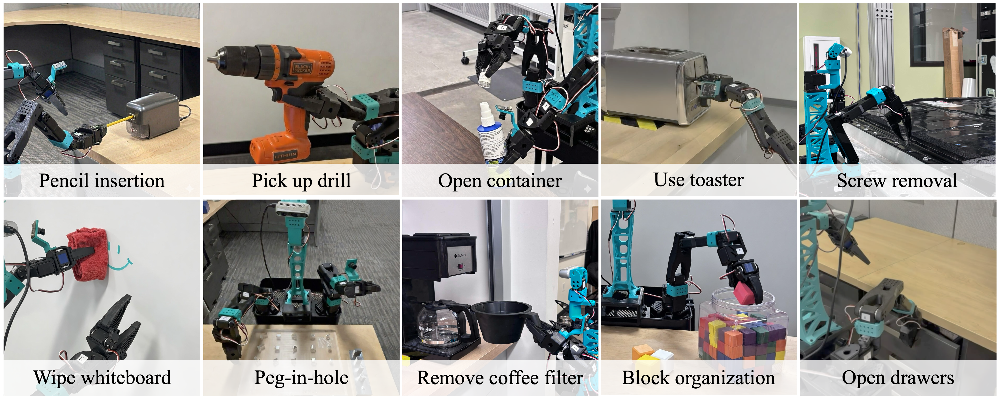
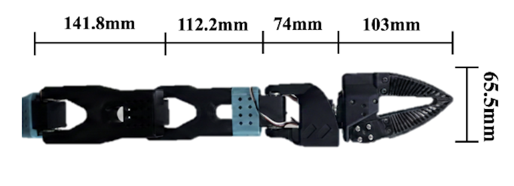
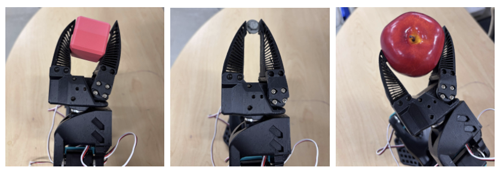
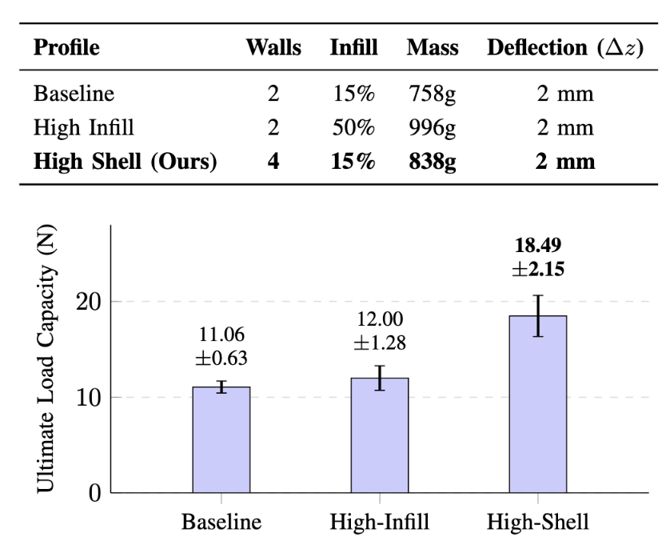
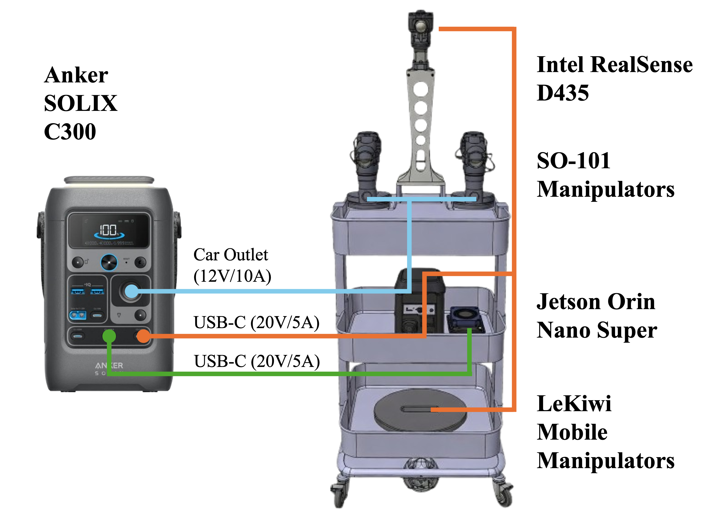
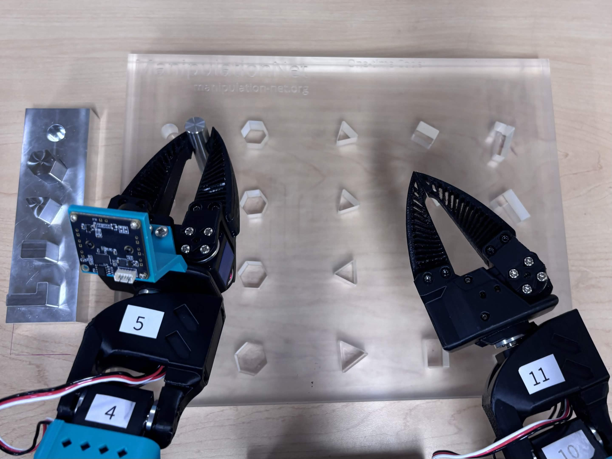
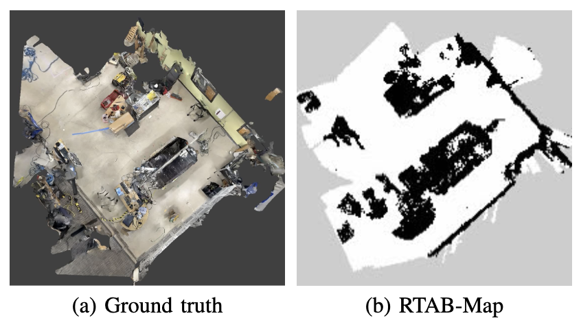
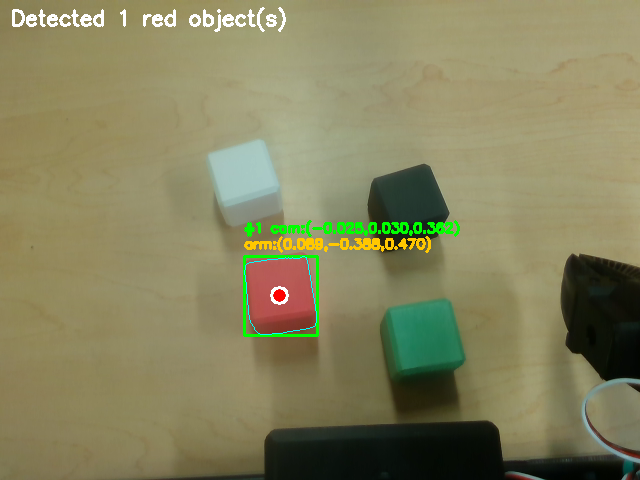

Two arms, a mobile base, and the computer on board.
XLeRobot-Pro is a two-arm mobile robot that costs $1,247 in parts. It adds a Jetson Orin Nano Super to XLeRobot, so you can record demonstrations, train a policy, and run it on the robot, on battery, without a separate computer.

Why XLeRobot-Pro?
Two-arm mobile robots that carry their own computer have mostly cost tens of thousands of dollars. XLeRobot brought the hardware down to about $660, but at that price it runs its learned policies on a separate laptop. XLeRobot-Pro moves training and inference onto the robot itself.
The frame is an IKEA RÅSKOG steel cart. The arms, neck, and mounts are printed in PLA, and everything else is off the shelf. Two changes made the added load work: the arms moved to their own power outlet instead of sharing servo buses with the head and wheels, and the printed arm links have thicker walls.
This overview video comes from an earlier version of the project. Where its on-screen numbers differ from the measurements on this page, the page is current.
System Capabilities
The Hugging Face LeRobot framework records demonstrations, trains policies, and runs them on the Jetson. An ACT policy trained on the robot in under an hour lifted a bottle in 49 of 50 trials on battery (one arm, one fixed bottle position). The ten tasks below were done by VR teleoperation with all computation on board.

VR Teleoperation
An operator drives both arms from a VR headset, using hand tracking or controllers. The interface builds on Open-TeleVision.
Mapping
RTAB-Map builds a visual map from the RealSense, and Nav2 plans paths in it. This part of the stack runs on the robot but has not been evaluated.
Hardware Architecture
What's on the Robot
Everything is a part you can buy or print. These are the pieces that changed from XLeRobot, or that matter most when you build one.
SO-101 Arms
Two SO-101 arms, each with five joints and a gripper. Each arm reaches a little over 40 cm.

Fin-Ray End-Effectors
TPU Fin-Ray fingers bend around what they hold. Under teleoperation they seated and lifted five test objects (a plastic apple, a cube, a drill, a water bottle, and a screwdriver) in 74 of 75 attempts; the one miss was the 17 g apple.

Stronger Printed Arm Links
Load-bearing links are printed with 4 perimeters instead of 2, at the same 15% infill. In cantilever tests the arms failed at 18.5 N instead of 11.1 N (+67%), and the break moved from the printed link to the servo. The cost is 80 g per arm.

Compute and Power
A Jetson Orin Nano Super sits on an open frame at the center of the chassis, with a RealSense D435 on the neck. The arms, the head and wheels, and the Jetson each draw from their own outlet on one Anker SOLIX C300 DC. In XLeRobot's wiring, each arm shares a servo bus with the head or the wheels, and moving an arm and the head together collapsed that bus supply in 5 of 5 stress trials. With the arms on their own outlet and the firmware limits, the supply held in all 5.

Software Stack & Algorithms
The software pairs classical control for scripted reaching with learned policies trained on the robot.
Inverse Kinematics (IK) via Pink
Pink, an inverse kinematics library built on Pinocchio, turns target positions into joint angles for the color-target reaching demo, solving each step as a quadratic program on a single-arm model.

SLAM & Navigation
A ROS 2 pipeline with RTAB-Map and the RealSense D435 handles mapping and localization, and Nav2 plans and follows paths on 2D costmaps. It runs on the robot, but its accuracy has not been evaluated.

Visual Perception
A color detector (HSV thresholding and contours) finds the target in a RealSense frame and converts its 3D center into the arm's base frame, so IK can reach it.

LeRobot Integration
LeRobot handles recording, training, and deployment. These are the policy timings on the Jetson in MAXN SUPER mode, from the paper:
| Policy | Denoising steps | Time per pass |
|---|---|---|
| ACT (100-action chunk) | – | 104.5 ms |
| Diffusion Policy | 10 | 540 ms |
| SmolVLA (450M) | 10 | 997 ms |
| SmolVLA (450M) | 2 | 363 ms |
Two steps is faster but not free: over a 30-minute run it drew 3.2 W more module power than ten, and the GPU clock sagged about 9% late in the run. Task success at two steps was not tested.
Hardware Overview & Specifications
These are the measured numbers from the paper, with the conditions they hold under.
System Specifications
Known Limitations
How long a shoulder can hold a load depends on the load. With the load 18.6 cm from the joint, 0.7 kg held for the full 30 minutes, 0.8 kg reached the 65 °C stop after 27.8 minutes, 0.9 kg after 22.1 minutes, and 1 kg slipped. These holds come from one servo on battery, started warm, in a 24.4 °C room. Projected from whole-percent charge readings, the battery would last about 13–16 hours under continuous SmolVLA inference and about 17 hours holding loads.
Credits & Acknowledgements
Project Creators
Artemis Shaw, Chen Liu, Justin Costa, Rane Gray, Alina Skowronek, Kevin Diaz, Nam Bui, Nikolaus Correll.
Core Frameworks
- LeRobot: Built upon the foundational work of the Hugging Face LeRobot team.
- XLeRobot: Referencing the architectural design and initial implementation by Vector-Wangel.
Ready to start?
Start Building ↗